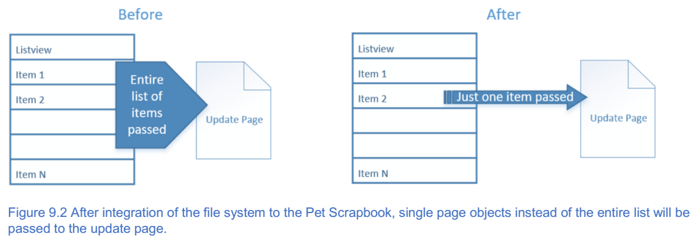
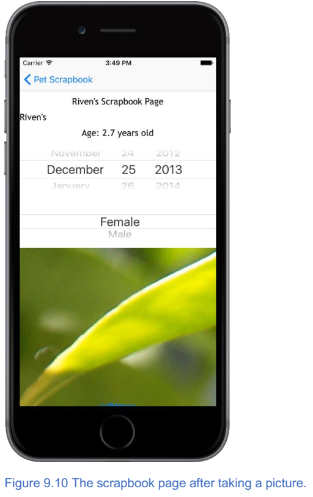
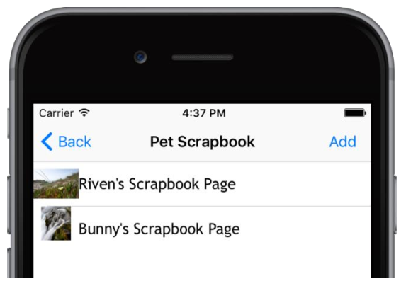
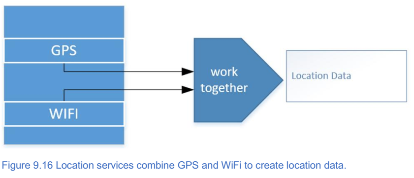

10. 原生硬件¶
本章涵盖
- 如何将加载应用程序数据和保存到文件；
- 如何使用设备的相机拍摄和保存图像；
- 如何使用
GPS和WiFi信号来确定您的位置；
在本书的前八章中，您学习了 NativeScript 的基本知识：它如何工作，如何组织应用程序，如何创建页面，如何向这些页面添加各种 UI 元素，以及如何使用数据绑定管理数据输入。通过这些主题，我们奠定了 NativeScript 知识的基础。事实上，你会在你制作的每个应用程序中使用这些知识。尽管这些主题都是基础，但他们专注于在移动设备屏幕上显示信息，而忽略了移动应用程序开发的一个重要方面：与原生移动设备硬件进行交互。
表面上，你可能会认为使用原生移动硬件组件很困难。考虑一下市场上的 Android 和 iOS 设备的数量。现在考虑设备之间的多样性：大多数设备是真正不同的：相机，GPS模块，NFC（或者没有NFC），甚至不同的蓝牙规格。每个设备都具有不同的功能集，并且每个设备都具有对底层 API 进行轻微修改的潜力。由于这些差异，编写一次代码并使其在所有平台上都可以工作很困难。但是，别担心。 NativeScript 通过抽象平台之间的共同点并在核心模块中公开一个公共 API 来解决这个问题。
在本章中，您将了解可用于与移动设备最常见的本地硬件组件进行交互的核心模块 API ：文件系统， GPS 和相机。我们将开始更新 Pet Scrapbook 应用程序以使用设备的文件系统，以便应用程序的用户可以保存他们制作的剪贴簿页面。这次更改后，我们将继续更新宠物剪贴簿以拍摄和保存图片。最后，您将学习如何使用 GPS 捕捉拍摄照片的位置。
10.1. 文件系统模块¶
在最后一章中，您学习了如何使用数据绑定创建更多动态 UI 。我们还对宠物剪贴簿进行了重新组织，以创建父母和孩子的观点，因此应用程序组织得更好。 在我们重新组织应用程序时，您可能已经注意到，每次加载应用程序时，输入的所有宠物数据都被删除。这是因为我们从未保存数据：只有在应用程序运行时才使用它，并在应用程序关闭后立即删除。实际上，我们无法想象一个剪贴簿应用程序每次关闭时都会删除其数据。事实上，无法保存剪贴簿页面会导致应用无法使用。我们来修复它。
花一点时间，想想你可以通过几种方式解决这个问题。随意从任何编写桌面，网页或移动应用程序的经验中可以找到方法。以下是我们想到的几种方法：
- 将数据存储在外部数据库中，可能通过 Web 服务访问。每次应用程序启动时，我们都可以查询 Web 服务，请求保存的数据并将其显示在应用程序中。每增加或更新一页，我们都可以使用相同的 Web 服务将数据保存回数据库。
- 将剪贴簿数据存储在本地（在文件或数据库中），根据需要读取和更新文件内容。
这两种方法都适用于宠物剪贴簿，但本书是关于使用 NativeScript 和移动设备硬件的。所以，让我们仔细看看第二种方法并将剪贴簿数据存储在设备的文件系统中。
10.1.1. 使用文件系统模块¶
要将数据存储在设备的文件系统中，请使用文件系统模块。
注解
文件系统模块是 NativeScript 核心模块。此模块允许您与设备的本机文件系统进行交互，以查找，检索和存储文件，并以文本或二进制格式与文件进行交互。
注解
如果您的应用程序已从设备中删除，则使用文件系统模块存储在设备上的所有数据也将被删除。
在宠物剪贴簿中，我们希望存储输入到每个页面的宠物信息在应用程序重新加载时不会丢失它。使用文件系统模块很简单，但让我们在应用我们的应用程序之前，先回顾一下与文件系统交互的基础知识。清单9.1展示了如何将数据存储在文件系统中，并将其格式化为 JSON 字符串。
清单9.1 在 NativeScript 中存储和检索文本文件
var fileSystemModule = require("file-system"); // 要使用文件系统模块，您需要导入它
exports.onLoaded = function() {
var fileName = "myFile.json";
var file = fileSystemModule.knownFolders.documents().getFile(fileName); //使用文档文件夹来存储应用程序需要的脱机文件
var data = {
name: "Brosteins",
type: "filesystemexample"
};
var jsonDataToWrite = JSON.stringify(data);
file.writeText(jsonDataToWrite); // 使用对文件的引用将数据写入文件系统
console.log("Wrote to the file: " + jsonDataToWrite);
var jsonDataRead = file.readTextSync(); //使用对该文件的引用来读取数据。 数据可以同步读取或异步读取
console.log("Read from the file: " + jsonDataRead);
file.remove(); //删除文件
};
如清单9.1所示，文件系统模块用于访问设备的文件系统。当访问设备的文件系统时，我们能够使用 readTextSync() 和 writeText() 函数在我们的应用可以访问的特定位置读取和写入文件。使用这些函数，列表9.1引用一个名为 myFile.json 的文件，然后把如下的 JSON 对象写入和读取：
{name: "Brosteins", type: "filesystemexample"}
小技巧
为什么选择 JSON ? JSON 易于阅读，易于编写，并且是 JavaScript 中 进行数据交换的事实上的文本格式。
您还会注意到列表9.1引用了名为 knownFolders 的文件系统模块上的一个属性。每个 NativeScript 应用程序都有可以使用文件系统模块访问公用的文件夹；这些常用文件夹称为已知文件夹。图9.1显示了每个 NativeScript 应用程序可以访问的两个不同的已知文件夹：文档( documents )和临时( temp )文件。

两个已知文件夹都是私有的，这意味着它们只能被您的应用访问。临时文件夹通常用于为应用程序缓存或存储临时数据（例如我们可能在弹出窗口中向用户显示的网页），而文档文件夹则用于在应用程序中存储更长时间的内容。我们应用程序的永久数据是我们希望在用户会话之间维护的任何数据，例如用户输入的数据，用户使用相机拍摄的图像或保存的游戏状态。
10.1.1.1. 处理二进制数据¶
您刚刚学会了如何将文本数据读写到文件系统，但您也可以编写二进制数据。
小技巧
您可以使用 writeSync() 函数将二进制数据写入文件。
尽管我们主要在本章中处理文本数据，但使用二进制格式的文件在处理图像或视频时可以派上用场。
10.1.2. 将文件系统模块集成到宠物剪贴簿中¶
现在您已经学习了文件系统模块的基础知识，让我们回到 Pet Scrapbook 应用程序并对其进行更新，以便将数据保存到文件系统。在第8章中，我们记得我们在添加新剪贴簿页面或点击现有剪贴簿页面列表项目（列表9.2）时，将整个剪贴簿模型传递到更新页面。
清单9.2 处理操作项的 tap 事件的 views\scrapbook-page.js
exports.onAddTap = function(args) {
var page = args.object;
var scrapbook = page.bindingContext; //剪贴簿是所有剪贴簿页面的数组
scrapbook.pages.push(new scrapbookPageModel());
frame.topmost().navigate({
moduleName: "views/scrapbookUpdate-page",
context: {
model: scrapbook,
index: scrapbook.pages.length - 1
} //剪贴簿是所有剪贴簿页面的数组
});
};
exports.onItemTap = function(args) {
var page = args.object;
var scrapbook = page.bindingContext; //#A
frame.topmost().navigate({
moduleName: "views/scrapbookUpdate-page",
context: {
model: scrapbook,
index: args.index
} //#A
});
};
清单9.2概述了第8章末尾应用程序中的数据流动。整个剪贴簿页面集合（剪贴簿变量）和要更新的索引都被传递到更新页面。
注解
在应用程序周围传递整个剪贴簿页面集可能看起来有点混乱，尤其是因为更新页面只关注单个剪贴簿页面。我们在第8章中选择了这种方法，其原因有两个：它有助于在 NativeScript 中演示不同的数据和页面绑定技术，并且它是获取每个页面所需的所有数据的简单方法。
现在我们已经了解了文件系统模块，我们不需要在应用程序周围传递整个剪贴簿页面集合：我们可以根据需要检索并保存各个页面。在我们深入研究代码之前，请查看图9.2，它描述了在集成文件系统模块后宠物剪贴簿将如何改变。
文件系统模块集成后，我们将每个页面存储到设备的文件系统中。这将允许我们将单个项目传递到更新页面。项目更新后，它将被保存回文件系统。在导航返回到页面列表时，我们将重新加载文件系统中的所有项目。图9.3显示了这两页的责任细分。

如图9.3所示，Pet Scrapbook 应用程序的每个页面都有一个与第8章中描述的主/细节模式相匹配的唯一目的。主页面（剪贴簿页面）负责显示项目列表。 详细信息页面（剪贴簿更新页面）负责更新可在母版页中选择的单个项目的字段。
现在您明白我们的目标，让我们开始使用一些代码。 我们将用5个步骤重构应用程序：
- 第1步：添加文件系统服务；
- 步骤2：为剪贴簿页面添加唯一标识符；
- 步骤3：重构剪贴簿列表页面以使用文件系统服务；
- 步骤4：重构传递到更新页面的导航上下文；
- 步骤5：重构更新页面以保存新的（和更新的）页面；
10.1.2.1. 步骤1：添加文件系统服务¶
该应用程序的主页和详细页面将共享文件系统的某些功能（读取和写入 JSON 数据），因此我们认为这是一个很好的机会将某些逻辑分解为可以在多个页面引用的可重用代码模块 。 我们喜欢将可重用模块称为服务类或服务模块。
注解
服务类/模块是可重用代码的集合，可以在应用程序中共享以执行特定的一组相关功能。服务类/模块通常在代码中创建一个内部 API 或中间层功能，并位于应用程序的前端 UI 层和数据或文件系统访问层之间。服务类/模块通常包含业务逻辑。
我们的服务类将处理对文件系统的所有访问，所以我们称之为文件系统服务。为 Pet Scrapbook 添加一个名为 data 的新文件夹（用于容纳所有与数据相关的服务类）并向其添加一个文件 fileSystemService.js 。
小技巧
我们已将文件系统服务添加到 data 文件夹。这种约定有助于通过将与数据访问或数据持久性相关联的文件存储在同一地方来保持我们的代码的组织。请记住这一点，因为您在应用程序中创建更多组件和功能，以帮助保持代码更有组织性和可维护性。
图9.4 显示了 Pet Scrapbook 应用程序的文件结构。

创建文件系统服务后，将清单9.3的内容添加到文件中。
注解
代码清单9.3使用了一个称为原型继承的 JavaScript 特性。如果你之前没有用过原型继承，那并不是那么糟糕。把它看做是为文件系统服务定义不同函数的一种方式。我们更喜欢使用这种方法，因为它为我们每个文件系统服务实例定义了一个函数。要了解有关 JavaScript 中原型继承的更多信息，请访问： https://developer.mozilla.org/enUS/docs/Web/JavaScript/Inheritance_and_the_prototype_chain 。
清单9.3 将用于文件系统交互的 data\fileSystemService.js 文件
var fileSystem = require("file-system"); // 导入文件系统模块
var fileSystemService = function() {
this.file = fileSystem.knownFolders.documents().getFile("scrapbook.json");
};
fileSystemService.prototype.getPages = function() { // 从文件系统中检索页面的方法
var pages = [];
if (this.file.readTextSync().length !== 0) {
pages = JSON.parse(this.file.readTextSync()); // 将JSON解析为对象
}
return pages;
}
fileSystemService.prototype.savePage = function(scrapbookPage) { // 将页面保存到文件系统的方法
var pages = this.getPages();
var index = pages.findIndex(function(element) { // 确定页面是否已经存在，以便我们可以更新它
return element.id === scrapbookPage.id;
});
if (index !== -1) {
pages[index] = {
id: scrapbookPage.id,
title: scrapbookPage.title,
gender: scrapbookPage.gender,
year: scrapbookPage.year,
month: scrapbookPage.month,
day: scrapbookPage.day
};
} else {
pages.push({
id: scrapbookPage.id,
title: scrapbookPage.title,
gender: scrapbookPage.gender,
year: scrapbookPage.year,
month: scrapbookPage.month,
day: scrapbookPage.day
});
}
var json = JSON.stringify(pages); // 将对象转换为JSON并保存到文件系统
this.file.writeText(json); // #F
};
exports.fileSystemService = new fileSystemService();
代码清单9.3有很多代码，所以让我们来剖析它。我们正在创建一个可重用的组件（非常类似于 NativeScript 中的核心模块），以便我们可以轻松地从文件系统中保存和检索剪贴簿数据。文件系统服务公开两个函数： getPages() 和 savePage() 。
getPages() 函数从文件系统中读取剪贴簿数据，并将其解析为一组剪贴簿页面。稍后我们将使用解析的数组来创建一个可观察的剪贴簿页面数组，以便显示剪贴簿列表视图。
savePage() 函数将单个剪贴簿页面保存到文件系统，并包含基本业务逻辑以检查页面是否已经存在以确定页面是否已更新或添加（图9.5）。
仔细看看 savePage() 函数，每个剪贴簿页面都有一个 id 属性，用作唯一标识符。这可以很容易地判断剪贴簿页面是新的还是现有的。
10.1.2.2. 步骤2：将唯一标识符添加到SCRAPBOOK页面¶
我们刚刚创建的文件系统服务期望剪贴簿页面具有唯一标识符，因此我们必须确保每个创建（和更新）的剪贴簿页面都有一个 id 。剪贴簿页面上的 scrapbookPageModel() 函数已经用于创建新的剪贴簿页面，所以我们只需要说明该函数中的 id 属性。清单9.4显示了我们所做的更改。
清单9.4 更新 scrapbook.js ，以便剪贴簿页面模型具有 id 属性
function scrapbookPageModel(id) { // 强制他人提供一个ID来创建剪贴簿页面
var model = new observable.Observable(); // #A
model.id = id; // #A
model.genders = ["Female", "Male", "Other"];
model.calcAge = function(year, month, day) {
var date = new Date(year, month, day);
var now = Date.now();
var diff = Math.abs(now - date) / 1000 / 31536000;
return diff.toFixed(1);
};
return model;
}
10.1.2.3. 步骤3：使用文件系统服务来重构SCRAPBOOK列表页面¶
添加文件系统服务后，让我们开始在剪贴簿列表页面上使用它。在第8章结尾处，剪贴簿列表页面上的列表视图被绑定到 observable 的 pages 属性。清单9.5显示了数据如何加载到 observable 中。
代码清单9.5 在第8章末尾将剪贴簿页面列表加载到 observable 页面中
exports.onLoaded = function(args) {
var page = args.object;
var scrapbook;
if (page.navigationContext != null) {
scrapbook = page.navigationContext.model; //剪贴簿页面从更新页面加载传递给它们，或者是一个空数组
} else {
scrapbook = new observable.fromObject({
pages: new observableArray.ObservableArray(new scrapbookPageModel()) //#A
});
}
page.bindingContext = scrapbook;
};
以前，通过点击从更新页面传回的导航上下文（当我们添加/更新页面时）或通过创建新的可观察数组来加载剪贴簿页面。现在我们已经添加了文件系统服务，加载剪贴簿页面列表变得更容易了（列表9.6）。
清单9.6 用更新的 onLoaded 方法从文件系统服务加载剪贴簿页面的 scrapbook.js
exports.onLoaded = function(args) {
var page = args.object;
var scrapbook = new observable.fromObject({
pages: new observableArray.ObservableArray()
});
var pages = fileSystemService.fileSystemService.getPages(); // 从文件系统加载页面数组
if (pages.length !== 0) {
pages.forEach(function(item) {
var model = new scrapbookPageModel(item.id); // 创建一个可观察对象并设置剪贴簿页面的属性
model.title = item.title;
model.gender = item.gender;
model.year = item.year;
model.month = item.month;
model.day = item.day;
scrapbook.pages.push(model);
});
}
page.bindingContext = scrapbook;
};
当页面加载时，更新的代码创建了一个可观察数组来保存剪贴簿页面（请参阅剪贴簿对象的 pages 属性）。在使用文件系统服务检索保存的剪贴簿页面后，我们检查是否保存了任何页面。对于每个保存的页面，我们使用 scrapbookPageModel() 函数创建一个新的剪贴簿页面模型并填充其字段。最后，页面的绑定上下文被设置为剪贴簿对象。
这种更新代码的优点在于其简单性：每次页面加载时，它都会从文件系统获取数据。假设更新页面将新的（和更新的）页面保存到文件系统，这种方法运行良好。让我们确保更新页面接下来做的。
10.1.2.4. 第4步：更改页面导航的导航上下文¶
现在我们已经集成了文件系统服务来从设备的文件系统加载数据，我们不再需要传递整个剪贴簿（因为它被保存到文件系统中）。我们真正需要通过导航绑定上下文传递到更新页面的是单个剪贴簿页面。图9.6比较了我们将文件系统集成到我们的应用程序之前和之后传递到剪贴簿更新页面的导航绑定上下文。

让我们看看我们需要做的代码更改，以更改传递到更新页面的导航上下文（列表9.7）。
清单9.7 更新的导航绑定上下文传递给 scrapbook-page.js 中的更新页面
exports.onAddTap = function(args) {
var page = args.object;
var scrapbook = page.bindingContext;
frame.topmost().navigate({
moduleName: "views/scrapbookUpdate-page",
context: {
model: new scrapbookPageModel(scrapbook.pages.length)
} // 将新的剪贴簿页面模型传递到剪贴簿更新页面
});
};
exports.onItemTap = function(args) {
var page = args.object;
var scrapbook = page.bindingContext;
frame.topmost().navigate({
moduleName: "views/scrapbookUpdate-page",
context: {
model: scrapbook.pages.getItem(args.index)
} // 将剪贴簿页面发送到剪贴簿更新页面
});
};
要将单个剪贴簿页面对象发送到更新页面，我们需要对添加按钮点击事件处理程序( onAddTap() 函数 )和列表视图的项目点击事件处理程序( onItemTap() 函数)进行更改。传递给每个函数的更新页面的上下文被调整为发送单个剪贴簿页面对象，但是它们以不同的方式进行了更改。对于新页面( onAddTap() 函数)，我们使用 scrapbookPageModel() 函数创建一个新的剪贴簿页面对象。对于现有页面，我们查找项目并直接传递。
小技巧
您可能还记得我们在步骤2中更改了 scrapbookPageModel() 函数以要求唯一标识符。生成唯一的号码可能很困难，但我们使用了一个很酷的 JavaScript 技巧来生成我们的唯一号码。我们使用页面的可观察数组长度作为我们唯一的标识符。当数组中没有项目时，长度为 0 ，给我们一个唯一的标识符 0 。当赋值为 0 的页面被添加到可观察数组时，它也将在索引 0 处。这也意味着添加的下一个页面将具有可观察数组中的唯一 ID 为 1 ，索引为 1 。很酷！
对剪贴簿列表页面所做的更改使页面更简单易懂，但这只是代码的一半。我们还需要更改更新页面，以说明通过导航上下文传递的单个对象。列表9.8显示了更新页面的加载事件处理程序的更改。
清单9.8 更新加载的事件处理程序，支持 scrapbookUpdate-page.js 中的单个剪贴簿页面对象
exports.onLoaded = function(args) {
var page = args.object;
var scrapbookPage = page.navigationContext.model;
page.bindingContext = scrapbookPage;
};
10.1.2.5. 第5步：更新页面以便保存新的（和更新的）页面¶
我们更改的最后一步是更改更新页面以将更新剪贴簿页面保存到文件系统，而不是通过导航上下文将更新的页面传回剪贴簿列表页面。清单9.9显示了更新按钮点击处理程序代码，它用文件系统服务保存剪贴簿页面。
清单9.9 在 scrapbookUpdate-page.js 中更新完成的按钮点击处理程序
var fileSystemService = require("~/data/fileSystemService");
exports.onDoneTap = function(args) {
var page = args.object;
var scrapbookPage = page.bindingContext;
fileSystemService.fileSystemService.savePage(scrapbookPage); // 使用文件系统服务保存页面
frame.topmost().navigate({ // 返回主页面而不传递导航上下文
moduleName: "views/scrapbook-page" // #B
}); // #B
};
我们完成了。如果您运行宠物剪贴簿应用程序，您会注意到如果您退出应用程序，您的剪贴簿网页仍然存在！没有多少东西可以直观地显示（因为我们没有触及用户界面），但是这种变化使得应用更加可用。现在您已经学会了如何使用文件系统，现在可以继续向剪贴簿应用添加功能并在 NativeScript 中使用更多硬件。
10.2. 相机¶
现代智能手机的基础是能够拍摄，保存和分享照片。但是，到目前为止，宠物剪贴簿没有使用这个功能。实际上，我们认为宠物剪贴簿不是剪贴簿，因为没有任何照片！让我们通过允许用户使用设备的相机拍照（或从相册中选择现有照片）并将其直接添加到剪贴簿页面来改变这一点。
在我们开始之前，您需要将 nativescript-camera npm 包添加到您的应用程序中。打开命令行，导航到您的应用程序的根文件夹，然后运行以下命令：
npm install nativescript-camera --save
警告
NativeScript 最初附带一个名为 camera 的核心模块，它提供了与 nativescript-camera 模块相同的功能。在2016年10月，相机核心模块已被弃用，并转移到它自己的 npm 包。这一举措是有道理的，因为它允许更快的开发周期，而无需等待 NativeScript 的核心更新。截至2017年1月，相机核心模块仍作为 NativeScript 的一部分存在。我们预计它很快就会从核心模块中删除，所以你不应该使用它。
10.2.1. 拍照¶
在移动设备上拍摄照片非常普遍，无需任何介绍，但移动设备如何拍照（以及拍照时可用的选项）在各种平台和设备上差异很大。由于这些差异， nativescript-camera 软件包以简约的方式处理照片和相机的使用：当您想拍照时，请调用 takePicture() 函数。反过来，当调用该功能时，只需打开本机设备的相机 UI ，然后让本机处理其余事情。这很简单，所以让我们开始吧。
要将相机和照片集成到宠物剪贴簿应用程序中，我们将首先在更新页面上添加一个按钮。当用户点击按钮时，我们将从 nativescript-camera 模块调用 takePicture() 函数。完成此步骤后，我们会将照片添加到剪贴簿页面模型并将其显示在页面上。让我们从 UI 开始，并将按钮和图像元素添加到更新页面（清单9.10）。
清单9.10 添加了相机按钮和图像的 scrapbookUpdate-page.xml
<Page loaded="onLoaded">
<StackLayout>
<Label text="{{ title, title + ' Scrapbook Page' }}"/>
<TextField class="header" text="{{ title }}" hint="Enter title..."/>
<Label text="{{ 'Age: ' + calcAge(year, month, day) + ' years old'}} "/>
<DatePicker year="{{ year }}" month="{{ month }}" day="{{ day }}"/>
<ListPicker items="{{ genders }}" selectedIndex="{{ gender }}"/>
<Image src="{{ image }}" stretch="none"/> // 图像的来源是数据绑定到剪贴簿页面的图像属性
<Button tap="onAddImageTap" text="Add Image"/> // 点击添加图像按钮将打开本机相机UI以拍摄或选择照片
<Button tap="onDoneTap" text="Done"/>
</StackLayout>
</Page>
用于更新页面的 XML 不需要太多工作，因为我们添加的所有内容都是图像元素和用于打开本机相机 UI 的按钮。 需要注意的一件事是图像元素的源属性是数据绑定到剪贴簿页面的绑定上下文的图像属性。我们尚未明确将此属性添加到我们的剪贴簿模型中，但请不要担心：我们会稍微处理一下。
注解
请记住，图像元素默认拉伸图像以填充屏幕。现在，我们将图片设置为不拉伸以保持宽高比，但在下一章中，我们将重新审视样式并使页面看起来更专业。
当用户点击添加图像按钮时，我们想要启动本机相机 UI ，允许他们拍摄或选择图片。清单9.11显示了处理按钮的 tap 事件处理程序时添加的代码。
列表9.11 图像按钮点击事件处理程序添加到 scrapbookUpdate-page.js
var camera = require("nativescript-camera"); // 导入nativescript-camera模块和图像源模块与任何核心模块相同
var image = require("image-source"); // #A
exports.onAddImageTap = function(args) {
var page = args.object;
var scrapbookPage = page.bindingContext;
camera.requestPermissions(); // 要使用相机，您需要申请权限
camera.takePicture() // takePicture()返回一个承诺
.then(function(picture) { // 当promise解析时，调用then()函数传递图片
image.fromAsset(picture).then(function(imageSource) {
scrapbookPage.set("image", imageSource); // 创建一个图像源对象绑定到视图
});
});
}
正如我们所提到的，使用相机模块非常简单，但我们想指出一些项目。在使用相机拍摄照片之前，您需要通过调用 requestPermissions() 函数向移动设备询问是否可以使用相机。当调用此方法时，移动设备将提示用户授予使用相机的权限。图9.7显示了 Android 和 iOS 上的不同消息。
小技巧
您必须获得访问相机一次的权限，但在拍摄照片之前请求获得许可是一种很好的做法，即使您确信自己已经提出要求。一旦您被授予使用相机的权限，多次调用 requestPermissions() 函数将被忽略。
在向摄像机请求许可后，可以使用 takePicture() 函数拍摄图片。当被调用时，该函数在打开本机设备的相机 UI 后返回一个 JavaScript 承诺。当本机相机 UI 返回从设备的照片库中拍摄或选择的照片时，承诺将得到解析。 解析该承诺包含对图片的引用。方便的是，返回的图片正是图片元素需要与数据绑定的图片，所以我们可以直接将其添加到剪贴簿页面模型，数据绑定将负责其余部分。
注解
承诺是 JavaScript 执行异步代码的方式。我们不会涵盖承诺如何工作，但您可以通过 https://developers.google.com/web/fundamentals/getting-started/primers/promises 了解有关承诺的更多信息。
进行这些更改后，我们来看看剪贴簿。图9.9显示了点击添加图像按钮后显示的 Android 和 iOS 相机 UI 。
注解
在Android和iOS中与相机的差异
Android 模拟器模拟相机，但 iOS 模拟器不支持。如果您使用 iOS 模拟器运行应用程序，则只能选择设备照片库中的图像；无论从库中选择图像还是由相机拍摄图像，由相机模块返回的结果图像对象都是相同的。
在 iOS 中，您首次从新应用程序启动相机时，系统会提示用户使用安全对话框，如下图所示。
通过更新 Info.plist 文件内的 NSPhotoLibraryUsageDescription 键/值对，可以为 iOS 定制安全对话框的描述文本。
<key>NSPhotoLibraryUsageDescription</key> <string>This app would like to access the camera to take a picture of your pet.</ string>
info.plist文件是一个信息属性列表文件。iOS文件使用此文件向iOS提供元数据。iOS理解info.plist文件（系统键/值对集合）的结构并能够在运行时访问该文件。info.plist文件位于app/App_Resources/iOS/Info.plist第三章讨论的特定于平台的文件夹文件中。有关info.plist文件的更多信息，您可以在 https://developer.apple.com/library/content/documentation/General/Reference/InfoPlistKeyReference/Introduction/Introduction.html 查看官方Apple文档。
在用户选择图像或使用相机拍摄图片后，相机模块会自动将用户返回到他们所在的页面，如图9.10所示。
您可能已经注意到您选择或拍摄的图像相当大。大多数设备相机具有非常高的百万像素数量，这可能会导致拍摄设备上消耗大量空间的图像，并且体积也很大。幸运的是，相机模块允许您通过传递一个参数给 takePicture() 函数来调整图片的大小（列表9.12）。
清单9.12 将参数传递给更新页面上的 takePicture() 函数以控制图像大小
exports.onAddImageTap = function(args) {
var page = args.object;
var scrapbookPage = page.bindingContext;
camera.requestPermissions();
camera.takePicture({
width: 100,
// 设置我们用相机拍摄的图像的高度和宽度
height: 100,
// #A
keepAspectRatio: true
}) // 告诉相机模块保持所拍照片的宽高比
.then(function(picture) {
image.fromAsset(picture).then(function(imageSource) {
scrapbookPage.set("image", imageSource);
});
});
}
takePicture() 函数将可选的 JSON 对象作为接受四个可选属性的参数： width ， height ， keepAspectRatio 和 saveToGallery 。
表9.1总结了如何使用每个属性。
| 名称 | 描述 |
|---|---|
| width | 图片的最大（或所需）宽度（与设备无关的像素）。 |
| height | 图片的最大（或所需）高度（与设备无关的像素）。 |
| keepAspectRatio | 真/假值指示图像的原始高宽比（或尺寸）应该如何的被强制执行。 |
| saveToGallery | 真/假值指示照片是否应保存到移动设备照片库。这是Android上的“照片”区域和iOS上的“相机胶卷”。 |
进行这些更改后，拍摄的照片在我们的设备上显得较小（图9.11）。

10.2.1.1. 说明宽度，高度，并保持高宽比的解释¶
您可能已经注意到，即使我们指定了 100 像素的宽度和高度，图9.11中的图片也不是 100 x 100 像素。这是因为我们要求应用保持图片的宽高比。
注解
图片的宽高比是图片的宽度和高度之间的关系，以 ＃:＃ 格式表示，请阅读 “＃by＃” 。例如，宽度为 300 像素，高度为 400 像素的图像被称为 作为具有 3:4 的宽高比，或者读“三乘四”。此外，100×100 像素图像具有 1:1 的宽高比。
通过告诉应用程序保留图像的宽高比， nativescript-camera 包会自动重新调整图片的高度和宽度，以保持图片的宽高比，但会调整为所需的宽度或高度。在图9.11中，图像的宽高比为 3:2 ，因此图像的大小调整为 100 x 67 像素。
10.2.2. 将图像保存到文件系统¶
现在我们已经将相机集成到宠物剪贴簿中，我们需要提供一种将剪贴簿图像保存到文件系统的方法。这意味着，我们将对本章前面创建的文件系统服务进行一些更改。但是，在我们开始编写代码之前，我们需要决定如何将二进制图像数据保存到文本文件。
警告
等一下！ 二进制数据？ 如果您以前从未使用过图像，那么您可能不知道图像是以二进制数据存储的，而不是文本数据。这意味着您必须将图像数据作为二进制数据进行存储，读取和写入，或者在将二进制图像数据写入文件系统之前将其转换为文本数据。
在本章早些时候，我们提到过我们会将我们的剪贴簿数据存储在文本文件中，并将其格式化为 JSON 字符串。我们还使用文件系统模块的 readText() 和 writeText() 函数来读取和写入文本格式的数据。这会造成问题，因为我们的图像数据是二进制格式的。有几种方法可以解决这个问题，包括将二进制数据转换为文本数据，并将每个图像保存为文件系统上自己的二进制文件。为了简单起见，我们使用 base64 编码将二进制图像数据转换为文本数据。
注解
Base64 编码是一种常见的二进制字符串编码方案，它将采用二进制文件并将其表示为 ASCII 字符串。
小技巧
尽管我们已经决定通过使用 base64 编码保持简单，但将图像转换为 base64 编码可以将图像的大小增加高达 1.33 倍。随着我们为宠物剪贴簿添加越来越多的图像，我们用来存储所有剪贴簿数据的文件的大小可能会变得相当大。如果我们打算拥有数百个剪贴簿页面，我们可能需要重新考虑将所有图像作为 base64 编码的字符串存储在单个文件中。相反，我们可以将每个图像分别存储为二进制文件，并将该文件的名称作为文本数据存储在主数据文件中。通过这种方法，我们可以根据需要加载单个图像文件，而不是一次加载所有内容。
让我们从本章前面的章节重新访问文件系统服务，并添加对读取和保存图像的支持，将其作为 base64 编码的字符串。我们将通过向 JSON 文件添加一个名为 imageBase64 的附加属性来完成此操作。在编写 JSON 文件之前，我们将把二进制图像转换为 base64 编码的字符串，并将该值放入 imageBase64 属性中。当从文件系统读取 JSON 文件时，我们将反转该过程，将 base64 编码的字符串转换为二进制图像。图9.13总结了这个过程。

幸运的是， NativeScript 的图像模块已经有了将图像转换为 base64 编码字符串和从 base64 编码字符串转换图像的实现。代码清单9.13显示了文件系统服务的更新以支持将图像保存到文件系统。
代码清单9.13 更新了 data\fileSystemService.js 文件来保存和加载图像
var fileSystem = require("file-system");
var imageModule = require("image-source"); // 图像模块有一个base64编码器/解码器
var fileSystemService = function() {
this.file = fileSystem.knownFolders.documents().getFile("scrapbook.json");
};
fileSystemService.prototype.getPages = function() {
var pages = [];
if (this.file.readTextSync().length !== 0) {
pages = JSON.parse(this.file.readTextSync());
}
pages.forEach(function(page) {
if (page.imageBase64 != null) {
page.image = imageModule.fromBase64(page.imageBase64); // 将每个加载到图像对象的图像字符串转换
}
});
return pages;
};
fileSystemService.prototype.savePage = function(scrapbookPage) {
var pages = this.getPages();
var index = pages.findIndex(function(element) {
return element.id === scrapbookPage.id;
});
if (index !== -1) {
pages[index] = {
id: scrapbookPage.id,
title: scrapbookPage.title,
gender: scrapbookPage.gender,
year: scrapbookPage.year,
month: scrapbookPage.month,
day: scrapbookPage.day,
imageBase64: scrapbookPage.image != null ? scrapbookPage.image.toBase64String("png") : null // 将图像转换为base64字符串以与剪贴簿页面一起存储
};
} else {
pages.push({
id: scrapbookPage.id,
title: scrapbookPage.title,
gender: scrapbookPage.gender,
year: scrapbookPage.year,
month: scrapbookPage.month,
day: scrapbookPage.day,
imageBase64: scrapbookPage.image != null ? scrapbookPage.image.toBase64String("png") : null // #C
});
}
var json = JSON.stringify(pages);
this.file.writeText(json);
};
exports.fileSystemService = new fileSystemService();
当我们更新文件系统服务时，我们在名为 imageBase64 的剪贴簿页面上创建了一个新属性。如图9.14所示， imageBase64 属性仅由文件系统服务使用。 我们还创建了 image 属性，该属性用于绑定到两个剪贴簿页面上的图像元素。
10.2.3. 显示图像¶
现在我们可以从文件系统（主剪贴簿页面）存储和检索图像对象，让我们更新主剪贴簿页面以显示我们宠物的缩略图图像。代码清单9.14和9.15演示了如何将图像属性添加到页面的绑定上下文，并将其绑定到列表视图中的图像元素。
代码清单9.14 更新了 scrapbook-page.js onLoaded() 函数，将图像加载到剪贴簿模型中
exports.onLoaded = function(args) {
var page = args.object;
var scrapbook = new observable.fromObject({
pages: new observableArray.ObservableArray()
});
var pages = fileSystemService.fileSystemService.getPages();
if (pages.length !== 0) {
pages.forEach(function(item) {
var model = new scrapbookPageModel();
model.id = item.id;
model.title = item.title;
model.gender = item.gender;
model.year = item.year;
model.month = item.month;
model.day = item.day;
model.image = item.image; //设置从文件系统加载的剪贴簿模型的图像属性
scrapbook.pages.push(model);
});
} else {
scrapbook = new observable.fromObject({
pages: new observableArray.ObservableArray()
});
}
page.bindingContext = scrapbook;
};
代码清单9.15 剪贴簿图片的 scrapbook-page.xml 绑定
<Page loaded="onLoaded">
<Page.actionBar>
<ActionBar title="Pet Scrapbook">
<ActionItem tap="onAddTap" ios.position="right" text="Add" android.position="actionBar"/>
</ActionBar>
</Page.actionBar>
<StackLayout>
<ListView items="{{ pages }}" itemTap="onItemTap">
<ListView.itemTemplate>
<StackLayout orientation="horizontal">//为缩略图创建水平布局
<Image src="{{ image }}"/> //将图像绑定到UI图像
<Label text="{{ title, title + ' Scrapbook Page' }}"/>
</StackLayout>
</ListView.itemTemplate>
</ListView>
</StackLayout>
</Page>
通过用水平堆栈布局包裹标签并添加图像，我们在列表视图项目模板中创建了缩略图的外观。图9.15显示了结果，图像和标签并排显示。
10.3. 使用GPS和位置服务¶
全球定位系统（GPS）是您在所创建的应用程序中使用的另一种移动设备功能。 GPS 通常与其他服务一起使用，例如地图显示您的位置，社交分享以告诉他人您正在访问的位置以及照片以识别拍摄照片的位置。我们将把 GPS 集成到宠物剪贴簿中，以便我们捕捉剪贴簿图像拍摄的位置。 尽管人们通常将他们的位置称为“使用GPS”，但现代移动设备使用的不止是 GPS 来确定您的位置。由于这种差异，您可能会看到称为“使用位置服务”的移动设备的位置相关功能。
注解
位置服务是一组识别用户位置的移动设备功能。大多数移动设备将 GPS 和 WiFi 信号结合起来，以帮助您高度准确地确定您的位置。
图9.16显示了这两个系统如何一起工作来生成可用于应用程序的位置数据。
现在您已经知道移动设备如何通过位置服务获取您的位置，我们将其添加到宠物剪贴簿中。我们将使用 nativescript-geolocation npm 软件包来访问位置服务。您将回顾本章的前面，您可以通过命令行将 npm 包添加到您的应用程序中： npm install <npm package name> --save 。 这适用于 nativescript-geolocation 包，但通过使用 NativeScript 插件系统还可以将包添加到应用程序。
10.3.1. 插件¶
NativeScript 插件是专门为 NativeScript 应用程序编写的 npm 软件包的一种奇妙说法。你已经看过（并使用过）各种插件，但可能没有意识到它。例如， NativeScript 核心模块和 nativescript-camera 软件包都是插件。实际上， NativeScript 有400多个插件，从自定义 UI 控件到加速度计等硬件设备，甚至是条形码扫描仪。现在，这很酷！
小技巧
官方 NativeScript 插件网站是 http://plugins.nativescript.org 。从那里，你可以浏览数百个插件。
如果我们在本章前面添加的核心模块和相机包是插件，您可能想知道所有的 npm 包是否都是插件？ 不完全是。 常规 npm 包有一些被认为是 NativeScript 插件的区别点，但如实说，除非您打算编写自己的插件，否则不需要了解这些。编写自己的插件是一个很酷且有趣的话题，但我们不打算在本书中介绍它。
注解
你可以在 https://docs.nativescript.org/plugins/plugins 找到更多有关 npm 包结构的插件信息。大多数 NativeScript 插件被命名为发布 nativescript-pluginname 约定，可以通过在 https://npmjs.org 上搜索 NativeScript 找到它。
10.3.2. 使用地理位置插件¶
正如我们前面提到的，您可以使用 npm CLI 将任何 npm 包添加到您的应用程序，但 NativeScript 具有专用的 CLI 选项来执行相同的操作。让我们使用 NativeScript CLI 添加地理位置插件。导航到 Pet Scrapbook 的根文件夹并运行以下 CLI 命令：
tns plugin add nativescript-geolocation
运行该命令后， nativescript-geolocation 插件将添加到应用程序中。如果您查看 node_modules 文件夹，则应该有一个新文件夹（图9.18）。

注解
不要忘记，所有的插件都是 npm 包，这就是为什么 geolocation 插件被添加到 node_modules 文件夹中的原因。
小技巧
你也可以直接使用 npm 来安装插件。例如，运行 tns 插件添加 nativescript-geolocation 与运行 npm install nativescriptgeolocation --save 相同。
现在我们已经添加了地理位置插件，我们可以像使用任何其他 NativeScript 核心模块一样使用它。在我们跳入代码之前，让我们计划如何将位置服务合并到应用程序中。图9.19显示了当按下添加图像按钮时，我们将如何修改应用程序的行为。
注解
请记住，当我们将相机添加到宠物剪贴簿并提示用户允许应用程序访问相机时？ 从应用内访问位置数据需要我们以类似的方式提示用户。这并不难完成，因为它是自动完成的，但我们认为指出很重要。
考虑到更新后的工作流程，请更新添加图像按钮点击事件处理程序，以合并使用位置服务的请求和调用以获取当前位置的请求（列表9.16）。
代码9.16 剪贴簿 Update-page.js 被更新以获取位置数据
var geolocation = require("nativescript-geolocation"); // 将地理位置包引用添加到顶部
exports.onAddImageTap = function(args) {
var page = args.object;
var scrapbookPage = page.bindingContext;
if (!geolocation.isEnabled()) { // 在使用之前，您应该检查位置服务是否已启用，并请求启用位置服务
geolocation.enableLocationRequest(); // #B
}
camera.takePicture({
width: 100,
height: 100,
keepAspectRatio: true
}).then(function(picture) {
image.fromAsset(picture).then(function(imageSource) {
scrapbookPage.set("image", imageSource);
});
geolocation.getCurrentLocation().then(function(location) { // 获取位置数据会自动提示用户获得许可
scrapbookPage.set("lat", location.latitude); // 返回的位置具有经度和纬度值
scrapbookPage.set("long", location.longitude); // #D
});
});
};
在使用地理位置包访问移动设备上的位置服务之前，您应该检查是否已启用。大多数现代移动设备默认都会禁用位置服务，因为它可能会导致设备的电池快速耗尽。代码9.16展示了如何使用地理位置插件的 isEnabled() 函数来检查是否为应用程序启用位置服务。如果未启用，则使用 enableLocationRequest() 函数来请求用户启用位置服务。
注解
地理定位模块的 isEnabled() 和 enableLocationRequest() 函数是很好的 API 抽象，它包装了本地实现所需的本地 API 调用，以确保启用位置服务。使用这些功能可以确保您可以轻松访问位置服务。如果用户未启用位置服务，则位置数据请求将不会返回任何内容。
一旦我们验证了我们有权访问位置服务， getCurrentLocation() 函数将查询移动设备的位置服务，并返回您的位置。您会注意到 JavaScript 实际上会返回，因此您必须使用 then() 函数语法来检索经度和纬度。最后，让我们在更新页面上添加一个标签，以便我们可以看到图片拍摄的位置（列表9.17）。
代码9.17 显示新的位置属性数据绑定的 scrapbookUpdate-page.xml
<Page loaded="onLoaded">
<StackLayout>
<Label text="{{ title, title + ' Scrapbook Page' }}"/>
<TextField class="header" text="{{ title }}" hint="Enter title..."/>
<Label text="{{ 'Age: ' + calcAge(year, month, day) + ' years old'}} "/>
<DatePicker year="{{ year }}" month="{{ month }}" day="{{ day }}"/>
<ListPicker items="{{ genders }}" selectedIndex="{{ gender }}"/>
<Image src="{{ image }}" stretch="none"/>
<Label text="{{ (lat, long), 'Picture taken at ' + lat + ', ' + long }}"/> // 将纬度和经度绑定到更新页面
<Button tap="onAddImageTap" text="Add Image"/>
<Button tap="onDoneTap" text="Done"/>
</StackLayout>
</Page>
让我们运行宠物剪贴簿，看看我们的行动变化。图9.20显示了点击添加图像按钮时显示的消息。

注解
允许位置访问的安全提示只会在应用程序第一次启动时发生。此行为由 Android 和 iOS 操作系统管理。
在允许宠物剪贴簿访问设备上的位置数据然后拍摄照片后，您将看到用户界面现在更新了经度和纬度，如图9.21所示。您可能还注意到，在清单9.14中，我们通过创建一个具有两个参数（lat和long）的表达式来扩展我们在上一章中学到的数据绑定表达式。要在绑定表达式中使用多个参数，需要使用括号将它们分组，然后用表达式中的逗号分隔它们。